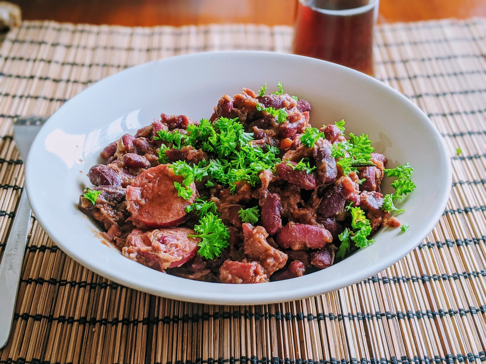

Feijoada

Pour 8 personnes (laaarge) :
- 600g de haricots rouges secs
- 6 saucisses fumées
- Un chorizo fort (entier, ou 200g de tranché)
- 6 tranches épaisses de poitrine fumée
- (facultatif) Des morceaux de bœuf à cuisson longue
- Deux ou trois carottes
- Trois gros oignons
- Un bouquet garni
- Paprika doux
- Paprika fort (ou piment moulu)
- Gros sel, sel, poivre, huile d'olive
- Mettre les haricots secs dans une grosse cocotte avec beaucoup d'eau (trois ou quatre fois ce qu'il est nécessaire pour les recouvrir), les laisser tremper une nuit.
- Le lendemain, éplucher carottes et un oignon. Couper les carottes en rondelle, l'oignon en six, et les ajouter dans la cocotte avec du gros sel et le bouquet garni. Si nécessaire, rajouter de l'eau jusqu'à ce que ça recouvre bien.
- En parallèle, mettre toutes les viandes sauf les saucisses dans une seconde cocotte, recouvrir d'eau et mettre un peu de gros sel. Faire chauffer les deux cocottes à gros bouillons pendant 1h30, en mélangeant de temps en temps (surtout les haricots).
- Éplucher et émincer les deux oignons restants. Récupérer quelques louches de jus de cuisson des viandes (surtout le gras qui flotte), puis vider la cocotte en récupérant les viandes égoutées quelque part (par exemple dans la passoire).
- Mettre les oignons au fond de la cocotte nouvellement vidée, et les faire chauffer à feu fort avec de l'huile d'olive. Ajouter progressivement les viandes cuites, pour les faire dorer un peu ; et pendant ce temps, couper les saucisses fumées en grosses tranches.
- À la louche, enlever le gros de l'eau de cuisson des haricots de leur cocotte. Une fois qu'il n'en reste plus trop, ajouter toutes les viandes (et oignons dorés) dans la cocotte des haricots.
- Saler, poivrer, saupoudrer de paprika (deux cuillères à soupe de paprika doux et une cuillère à soupe de fort donne un résultat gentil et pas trop fort, on peut facilement mettre deux ou trois cuillères à soupe de paprika fort si on aime les épices). Mettre une louche ou deux de jus de cuisson des viandes, recouvrir avec le jus de cuisson des haricots, bien mélanger.
- Faire cuire à feu doux environ 1h30 en remuant souvent, et en goûtant pour vérifier que les haricots sont bien cuits avant de servir. Le jus doit s'être un peu évaporé et épaissi (genre, si on ne le voit pas à l'œil nu, mais qu'il est au tiers ou à la moitié de la hauteur de la cocotte, c'est bon signe).
- Servir bien chaud, avec du riz ou de la farofa et un vin rouge bien puissant.
Retour à la liste des recettes